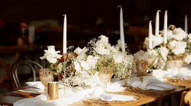

Locații de nuntă în Ciolpani
- locații în director
- 5
- medie ponderată Google
- 4,8 / 5
- evaluări Google
- 970
Cum alegi o locație în Ciolpani
În Ciolpani poți începe comparația cu NARRATIVE @ write your own story (local pentru evenimente), PORTICO VENUE - Nunti & Evenimente (local pentru evenimente), Jubile Forest (local pentru evenimente). Aceste proprietăți apar în primele poziții când luăm în calcul împreună nota și numărul de evaluări Google. Salvează adresele care vă interesează pentru a le așeza apoi alături în fișa de comparare a ofertelor.
Pentru partea de afară, avem o descriere a spațiului folosit la evenimente la Moonlight Venue — Grădină în incinta salonului pentru nunți. La vizionare, cere schița pentru numărul vostru de persoane, inclusiv locul unde vor sta muzicienii și pe unde intră invitații.
Pentru invitații care rămân peste noapte, în apropiere de NARRATIVE @ write your own story apare în evidența turistică și Floarea Soarelui din Piscu. Distanța măsurată între repere este de 3,7 km în linie dreaptă. Verifică traseul de întoarcere și rezervă camerele separat dacă oferta locației nu cuprinde cazare.
Dacă vrei să vezi două proprietăți în aceeași zi, poți continua de la Moonlight Venue spre ASTERIA Lac Snagov din Izvorani. Punctele lor sunt la 3,2 km în linie dreaptă. Deschide traseul înainte să fixezi ora celei de-a doua vizite, mai ales dacă grupul se deplasează cu autocarul.
Locații pentru vizionare
Ordinea ține cont de nota Google și de numărul evaluărilor. Cum calculăm ordinea

Fotografie a locației · Sursa fotografiei Ciolpani · Local pentru evenimente
NARRATIVE @ write your own story
NARRATIVE @ write your own story, Ciolpani. Un cuplu care și-a ținut nunta la NARRATIVE descrie două imagini foarte diferite din aceeași zi.
Intrarea Fermei 21, 077050 Ciolpani+40 740 248 888
Fotografie a locației · Sursa fotografiei Ciolpani · Local pentru evenimente
PORTICO VENUE - Nunti & Evenimente
PORTICO VENUE - Nunti & Evenimente. Cea mai utilă măsurătoare la vizionare este însă distanța dintre prima și ultima masă în zona disponibilă grupului vostru.
Str. Calea Bucuresti 350 Luparia, 077050 Ciolpani+40 720 333 888
Fotografie a locației · Sursa fotografiei Ciolpani · Local pentru evenimente
Jubile Forest
În comuna Ciolpani, în zona pădurii Snagov, la Jubile Forest există mărturia unor miri care au ales chiar acest loc pentru nuntă.
Zona pădurii Snagov, comuna Ciolpani, Ilfov+40 731 090 920
Fotografie a locației · Sursa fotografiei Ciolpani · Sală de nunți
The Green Spot Wedding Barn
The Green Spot Wedding Barn, Ciolpani. La The Green Spot, un cuplu povestește o nuntă în trei locuri distincte.
Padurea Snagov, 077050 Ciolpani+40 723 756 102
Fotografie a locației · Sursa fotografiei Ciolpani · Locație pentru evenimente
Moonlight Venue
Vezi grădina de 1.500 m² și salonul Moonlight Venue din Ciolpani. Află capacitatea anunțată, detaliile de acces și ce să verifici pentru cununia afară.
Strada Complex Olimpic nr. 31, Ciolpani+40 735 869 218
Întrebări despre locațiile din Ciolpani
Ce spații sunt documentate pentru evenimente în aer liber în Ciolpani?
Moonlight Venue — Grădină în incinta salonului pentru nunți.
Care locație din Ciolpani are cele mai multe evaluări Google?
NARRATIVE @ write your own story are 383 de evaluări în profilul Google folosit la documentare. Evaluările acoperă și alte experiențe la proprietate, inclusiv vizitele fără eveniment.
Unde apare o intrare accesibilă în Ciolpani?
Profilurile Google indică o intrare accesibilă la NARRATIVE @ write your own story, PORTICO VENUE - Nunti & Evenimente, The Green Spot Wedding Barn. Pentru o cununie în exterior, cere detalii despre traseul dintre intrare și zona cu scaune.
Ce alte localități pot include într-o vizionare lângă Ciolpani?
Cele mai apropiate adrese comparate pe hartă sunt în Izvorani, Tâncăbești, Snagov. Găsești mai jos distanțele dintre proprietățile folosite pentru această comparație.
Vizionări în apropiere
- Izvorani · 1 locație. Între Moonlight Venue și ASTERIA Lac Snagov sunt 3,2 km în linie dreaptă.
- Tâncăbești · 2 locații. Între Moonlight Venue și Locații evenimente Evergreen Snagov sunt 3,9 km în linie dreaptă.
- Snagov · 9 locații. Între Jubile Forest și Jubile By The Lake sunt 3,9 km în linie dreaptă.
Alte adrese din aceeași unitate administrativă
ASTERIA Lac Snagov (Izvorani).